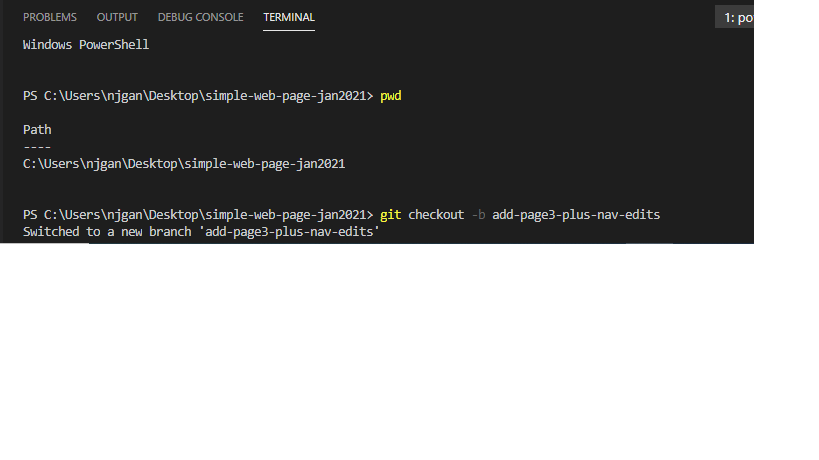
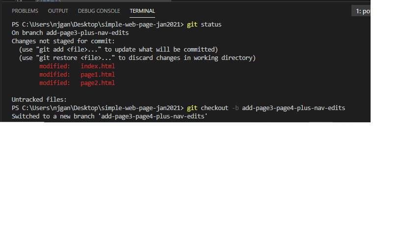
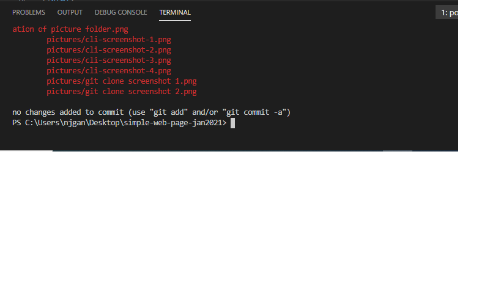
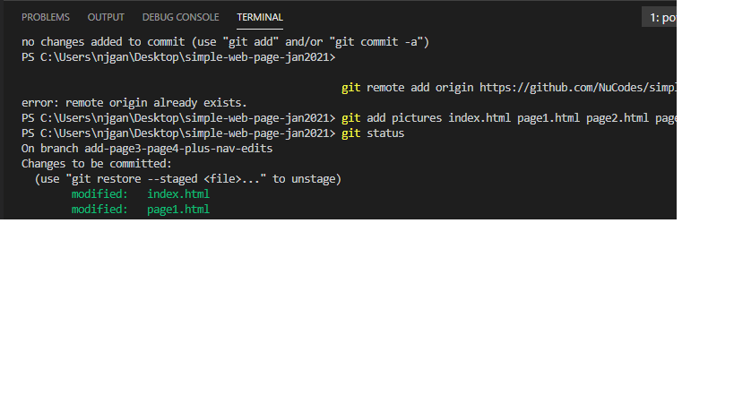
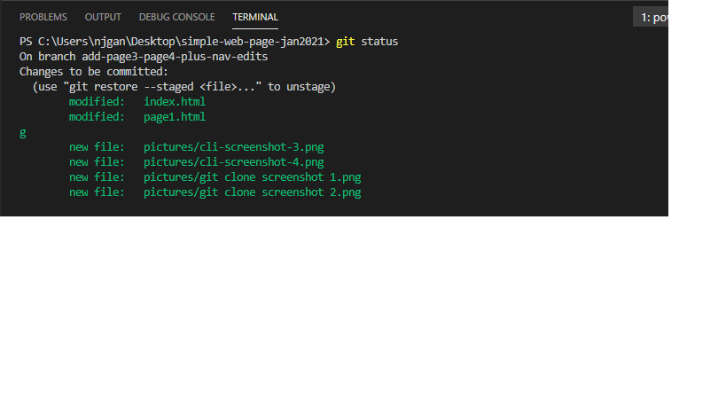
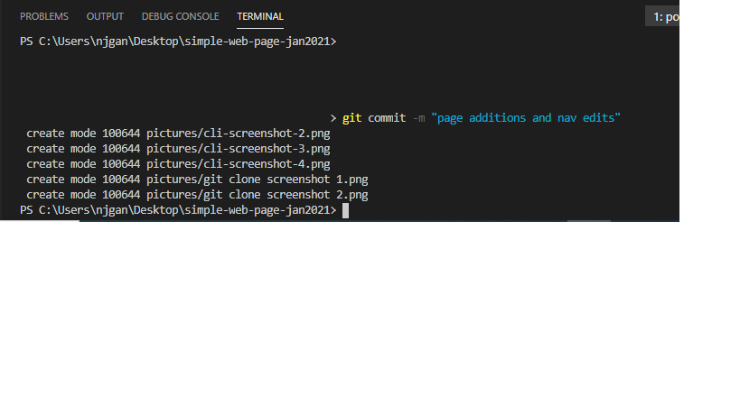

In addition to the last time I attempted this project, I have also learnt how to use the terminal in VS code to manage changes to my web page and upload it to my remote repository. The screen shots below show this process, from creating a new branch, adding commits, opening a pull request and merging it to the master branch:
  #   